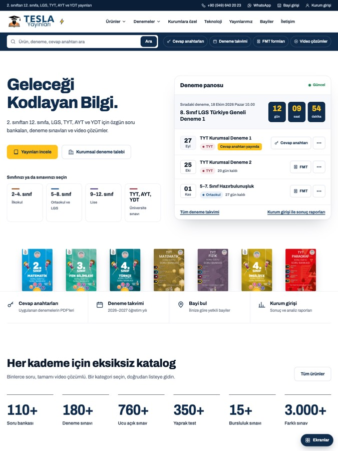

Seçiminiz doğrultusunda · 06.10.2026Nihai tasarım
Seçenek 2'nin sınav merkezi yapısı, Seçenek 1'in kurumsal ferahlığı ve Seçenek 3'ün teknoloji bileşenleri tek tasarımda.
- Ana sayfa sadeleşti; deneme panosunda sıradaki deneme ve en önemli üç satır kaldı.
- Elektrik sarısı yalnız düğmelerde ve kritik uyarılarda; ana renk lacivert ve beyaz.
- Yayınlarımız ve Kurumlara Özel sayfaları dergi tarzı premium dilde.
- Eğitim Teknolojileri sayfasında yapay zekâ karnesi, video çözüm ve yakında gelecek hizmetler.
Nihai tasarımı incele